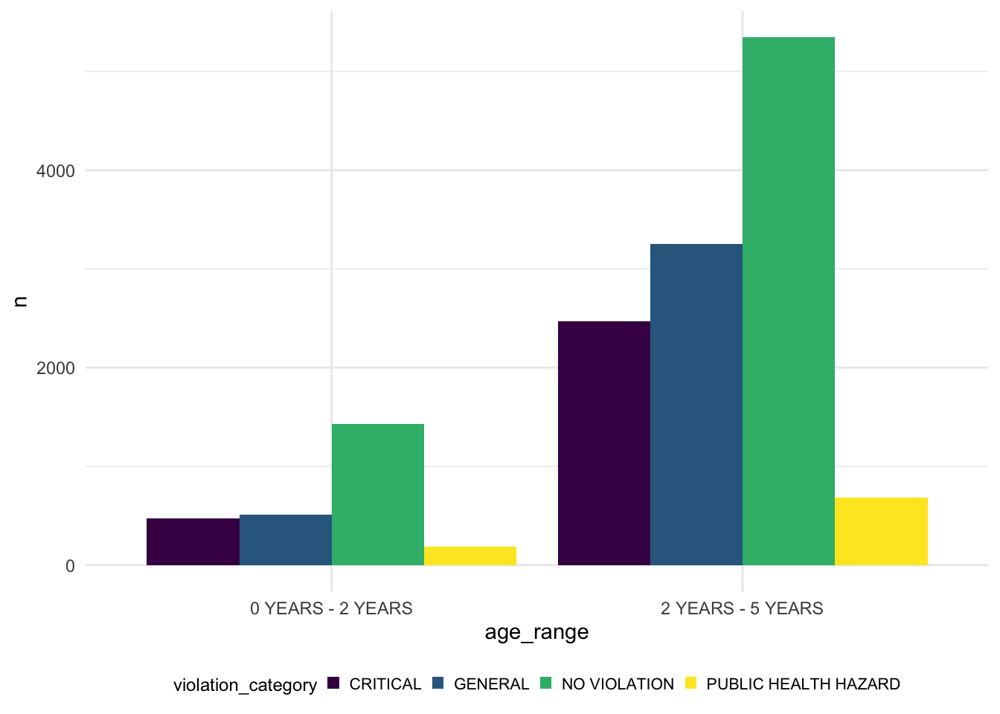

Childcare_center %>%
group_by(age_range) %>%
count(violation_category) %>%
ggplot(aes(fill =violation_category, x=age_range,y = n))+
geom_bar(position = "dodge", stat = "identity")
Childcare_center %>%
group_by(program_type) %>%
count(violation_category) %>%
ggplot(aes(fill =violation_category, x=program_type,y = n))+
geom_bar(position = "dodge", stat = "identity")Childcare_center %>%
group_by(borough, age_range) %>%
count(violation_category) %>%
ggplot(aes(fill =violation_category, x=borough,y = n))+
geom_bar(position = "dodge", stat = "identity")# try
try = Childcare_center %>%
select(borough,program_type,violation_category)%>%
filter(program_type!="CAMP")%>%
group_by(borough, program_type,violation_category) %>%
summarise(
n_obs=n())%>%
ggplot(aes(x = borough, y = n_obs, fill = violation_category))+
geom_bar(stat="identity", width = 0.5, position = "dodge")+
facet_grid(. ~ program_type) +
theme_bw() +
theme(axis.text.x = element_text(angle = 90))## `summarise()` has grouped output by 'borough', 'program_type'. You can override
## using the `.groups` argument.ggplotly(try) The graph above is showing the relationship between borough and the number of violation category count. The borough can separate the five parts “Bronx”, “Brooklyn”, “Manhattan”, “Staten Island” and “Queens”. Violation category “Critical”, “General”, “No Violation” and “Public Helath Hazard”.
Childcare_center %>%
group_by(borough) %>%
count(violation_category) %>%
ggplot(aes(fill =violation_category, x=borough,y = n))+
geom_bar(position = "dodge", stat = "identity")clean = Childcare_center %>%
mutate(borough = as.factor(borough), program_type = as.factor(program_type)) %>%
group_by(borough, program_type,total_educational_workers) %>%
count(violation_category)
fit = lm(n~ borough+program_type+total_educational_workers, data = clean)
anova(fit)## Analysis of Variance Table
##
## Response: n
## Df Sum Sq Mean Sq F value Pr(>F)
## borough 4 20606 5151 12.780 4.157e-10 ***
## program_type 1 19366 19366 48.044 8.207e-12 ***
## total_educational_workers 1 59003 59003 146.375 < 2.2e-16 ***
## Residuals 855 344646 403
## ---
## Signif. codes: 0 '***' 0.001 '**' 0.01 '*' 0.05 '.' 0.1 ' ' 1clean2 = Childcare_center %>%
mutate(borough = as.factor(borough), program_type = as.factor(program_type)) %>%
group_by(program_type) %>%
count(violation_category)
fit = lm(n~ program_type, data = clean2)
anova(fit) %>%
knitr::kable(caption = "Two way anova of violation frequency and month")| Df | Sum Sq | Mean Sq | F value | Pr(>F) | |
|---|---|---|---|---|---|
| program_type | 1 | 10460738 | 10460738 | 5.194815 | 0.0628675 |
| Residuals | 6 | 12082130 | 2013688 | NA | NA |